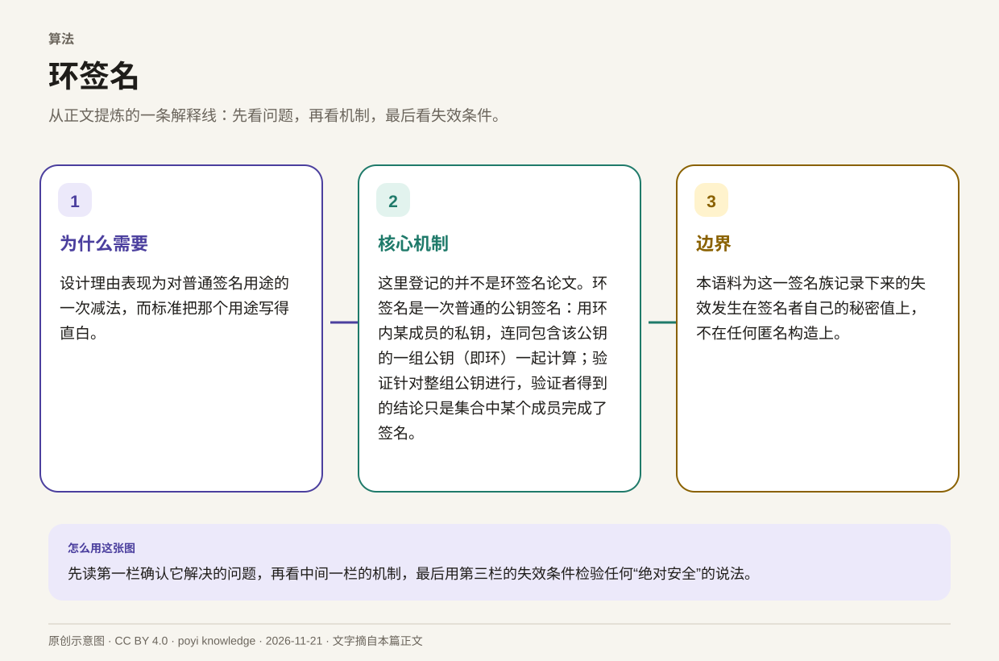
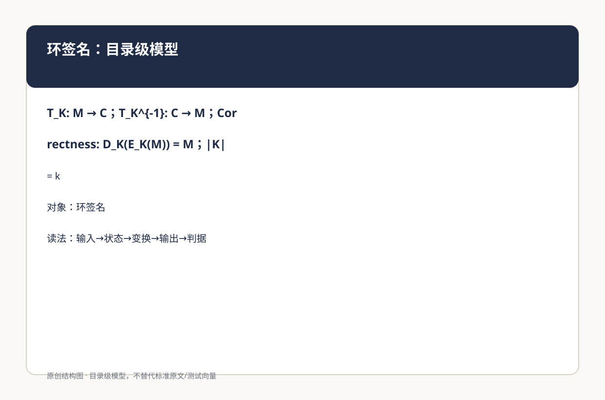

原理与机制
算法：环签名（Ring Signature）。这里登记的并不是环签名论文。检索 build/corpora.json 登记的全部留存件后，该词组只出现在无关正文里（fips186-5.txt:599 与 debian-dsa1571.html:94 都是把它写在关于签名生成的更长分句中），所以该条目依留存件确实印出的签名模型来陈述机制，不引用它们没有印出的句子，也不给出任何具体方案的安全性结论。环签名是一次普通的公钥签名：用环内某成员的私钥，连同包含该公钥的一组公钥（即环）一起计算；验证针对整组公钥进行，验证者得到的结论只是集合中某个成员完成了签名。它继承的模型印在 fips186-5.txt:36：「Signature generation uses a private key to generate a digital signature; signature verification uses a public key that corresponds to but is not the same as the private key.」（签名生成使用私钥；验证使用与私钥相对应但与之不同的公钥），同段收尾是 「Only the user that possesses the private key can perform signature generation.」（只有持有该私钥的用户才能执行签名生成），同一行还给出构造环的前提 「Each signatory possesses a private and public key pair.」（每个签署者持有一对公私钥）。该构造改变的是验证的对象——由一把公钥变为一组公钥；它没有改变任何私钥的秘密性。fips186-5.txt:35 要求规则 「allow the identity of the signatory and the integrity of the data to be verified」（使签署者身份与数据完整性得以被验证） 成立，而被环签名主动放弃的正是其中身份那一半。

为什么重要
设计理由表现为对普通签名用途的一次减法，而标准把那个用途写得直白。fips186-5.txt:23 的摘要印着 「Digital signatures are used to detect unauthorized modifications to data and to authenticate the identity of the signatory.」（数字签名用于检测数据被未经授权地修改，并认证签署者的身份），随后给出证据性那一项 「This is known as non-repudiation since the signatory cannot easily repudiate the signature at a later time.」（这被称为不可否认性，因为签署者日后难以轻易否认该签名）。密钥前提被写成与人的绑定：fips186-5.txt:224 的私钥定义是 「The private key is uniquely associated with the owner and is not made public.」（私钥与所有者唯一关联且不予公开）。而验证是针对公开对象做的公开运算——fips186-5.txt:36 写着 「Anyone can verify the signature by employing the signatory's public key.」（任何人都可用签署者的公钥验证该签名）。最后一句在逻辑上并不排除多把公钥：机制需要的是那把钥匙，身份结论需要的是 224 行所断言的那种关联。环签名移动的恰恰是这条界线：它保留完整性，也保留这些私钥之一签了名这一断言；它放弃指认所有者，随之也放弃可作证据的不可否认性——不指明签署者的签名无法拘束任何具体签署者。当调用方的真实需求只是某个既定集合的成员如此行事时，指认成员就是额外披露而非额外保障，这正是该设计的理由。以上是就留存件未描述的构造所做的推论；被引用的都是那些文件确实陈述的性质。
应用与实例
留存件给的是一个可扩展点，不是部署史。RFC 4252 的公钥方法正是环签名不提供的、以身份为约束的检查，而且是以强制要求的形式印出的：「With this method, the possession of a private key serves as authentication.This method works by sending a signature created with a private key of the user.The server MUST check that the key is a valid authenticator for the user, and MUST check that the signature is valid.」（在此方法中，持有私钥即构成认证；其做法是发送用该用户的私钥创建的签名；服务器必须检查该钥匙是该用户的有效认证物，并检查签名是否有效）（rfc4252.txt:439-443——引文中的四空格是这个文件的续行缩进，照原样保留）。签名覆盖与会话绑定的材料，因而不能从一次会话搬到另一次（rfc4252.txt:511-514）。对非标准方案有意义的是紧随其后的许可：「Any public key algorithm may be offered for use in authentication.In particular, the list is not constrained by what was negotiated during key exchange.」（任何公钥算法都可被提出用于认证；特别地，这一列表不受密钥交换期间协商结果的约束）（rfc4252.txt:474-476），同处 476-477 行给出的服务器处置是径直拒绝它不支持的算法。这就是这些文件所能支撑的全部内容：一套不在批准之列的签名方案，只能出现在验证者可自由接受或拒绝算法名的地方，接受与否由验证者策略决定。四份留存件都没有指名任何正在使用中的环签名方案；FIPS 186-5 把后续方案的批准权保留给自己的出版物与 NIST 特别出版物（fips186-5.txt:39），因此该条目也不声称它已获得批准投入使用。

边界与攻击面
本语料为这一签名族记录下来的失效发生在签名者自己的秘密值上，不在任何匿名构造上。公告在字段栏里把漏洞类别登记为 predictable random number generator（debian-dsa1571.html:75），并在一段里给出原因：「Luciano Bello discovered that the random number generator in Debian's openssl package is predictable.This is caused by an incorrect Debian-specific change to the openssl package (CVE-2008-0166).As a result, cryptographic key material may be guessable.」（Luciano Bello 发现 Debian 的 openssl 包中的随机数生成器是可预测的；这源于 Debian 专有的一处错误改动（CVE-2008-0166）；结果是密码密钥材料可能可猜）（debian-dsa1571.html:80-83）。它给出的算法级理由是冲着标准而非环说的：「the Digital Signature Algorithm relies on a secret random value used during signature generation.」（数字签名算法依赖签名生成过程中使用的秘密随机值）（debian-dsa1571.html:93-94），据此推出签名密钥的处置结论 「all DSA keys ever used on affected Debian systems for signing or authentication purposes should be considered compromised」（受影响 Debian 系统上曾用于签名或认证的全部 DSA 密钥都应视为已泄露）（debian-dsa1571.html:91-94）。影响面写得很宽：「Affected keys include SSH keys, OpenVPN keys, DNSSEC keys, and key material for use in X.509 certificates and session keys used in SSL/TLS connections.」（受影响的密钥包括 SSH 密钥、OpenVPN 密钥、DNSSEC 密钥，以及用于 X.509 证书的密钥材料与 SSL/TLS 会话密钥）（debian-dsa1571.html:101-103），而它恰好触及 SSH 文档描述的那类认证场景。FIPS 186-5 印着被违反的那条要求：每次调用签名生成都须产生一个 k（fips186-5.txt:627），且该值随机性不足会泄露私钥（fips186-5.txt:590）。对该条目而言，结论是留存件未明说、但被引用要求必然推出的那一步：环签名关于签名者的唯一断言只是持有环内某一把私钥，因此逐签名秘密值可被猜测的成员会同时失去签名保障与匿名性——被恢复的密钥直接指认了该成员。任何留存件都没有报告针对环构造本身的攻破，该条目也不作此类声称。
历史与背景
这里可定年的只有文献本身与它们引用的标准，而不是这一构造。RFC 4253 与 RFC 4252 的页眉都署 January 2006（rfc4253.txt:11、rfc4252.txt:11）；RFC 4253 还写明那层区分，即签名在部署协议里始终连着验证方针对具体钥匙所做的检查：「Authentication in this protocol level is host-based; this protocol does not perform user authentication.A higher level protocol for user authentication can be designed on top of this protocol.」（本协议层的认证是基于主机的，它不执行用户认证；可在其之上设计负责用户认证的更高层协议）（rfc4253.txt:125-127，续行缩进按原样保留）。它的 DSA 钥匙格式被钉在标准的旧版本上：「Signing and verifying using this key format is done according to the Digital Signature Standard [FIPS-186-2] using the SHA-1 hash [FIPS-180-2].」（使用该钥匙格式的签名与验证依 FIPS-186-2 数字签名标准进行，并使用 FIPS-180-2 的 SHA-1 杂凑）（rfc4253.txt:791-793），该版该条目在 rfc4253.txt:1649-1652 署 January 2000。其余三份留存件同样自证年代——FIPS 186-5 发布于 February 3, 2023 并取代 FIPS 186-4（fips186-5.txt:12、:4），Debian 公告发布于 May 13, 2008 而首个受影响版本上传于 2006-09-17（debian-dsa1571.html:71、:96-97）——四份之中没有任何一份印出环签名论文、其作者或该构造的年代。与创始人姓氏最近的一次出现是 FIPS 186-5 第 264 行的缩略语表，那里的 Rivest, Shamir, Adleman 展开的是 RSA 而非别的；RFC 4253 里出现 Rivest 的地方是第 1593 行的 MD5 参考条目。目录行自带的 Rivest、Shamir 与 Ta-Shma 书目在 build/corpora.json 中没有留存文本，因此该条目不作发明者与起源日期归因，而记录证据确实建立的东西：到 2006 年，部署中的协议要求签名绑定到某一把确定的钥匙；到 2023 年，登记在册的标准仍把签名生成定义为私钥运算。
逐步示例与核验
形式模型与复算步骤
[s=k^{-1}\big(H(m)+r d\big)\bmod n]
环签名的公开参数、密钥/随机数与消息；变量说明：k 一次性随机数，r 为承诺点横坐标，d 私钥，n 子群阶。1.选择随机 k，计算 R=kG 与 r。2.计算 s=k^{-1}(H(m)+rd) mod n。3.输出 (r,s)，验证者检查签名方程。边界：公式只覆盖已登记的参数与假设；参数取值、标准版本和实现细节仍以来源为准。
参考出处
- Wikipedia search entry for 环签名. https://zh.wikipedia.org/w/index.php?search=%E7%8E%AF%E7%AD%BE%E5%90%8D
- Handbook of Applied Cryptography (Menezes, van Oorschot, Vanstone). https://www.cacr.math.uwaterloo.ca/hac/